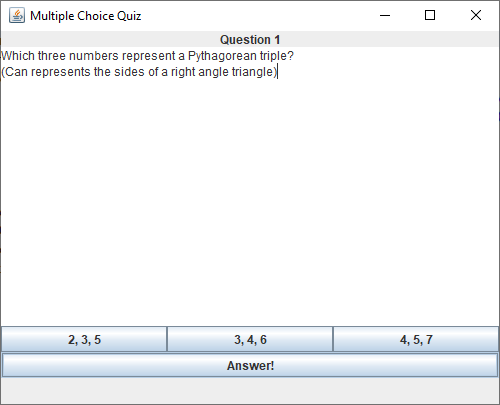

Potrebno je napraviti grafičku aplikaciju za prikaz pitanja s ponuđenim odgovorima kako je prikazano na slikama:

Razlika između slika je u veličini tj. koliko smo rastegnuli prozor. Uočite kako se s povećanjem prozora povećava samo dio za prikaz teksta pitanja, dok ostale komponente aplikacije ostaju jednake veličine.
Potrebno je dopuniti implementaciju klase MultipleChoiceQuizFrame koja se nalazi u paketu hr.fer.oop.ljir.z4 i pri tome osigurati da izgled aplikacije odgovara prikazanim slikama.
Napomena: U predlošku su označena mjesta s komentarom // TODO ... na kojima trebate dodati svoj kod.
Klasa MultipleChoiceQuestion služi za pohranu informacija o pitanjima s ponuđenim odgovorima. Ima konstruktor u kojem se postavljaju vrijednosti atributa, gettere za podatke o pitanju, getter i setter za dohvaćanje i postavljanje odabranog odgovora te metodu hasAnswer koja vraća informaciju je li odabran neki odgovor na pitanje. Klasu MultipleChoiceQuestion NIJE doušteno mijenjati.
Aplikacija se sastoji od posebnog panela za prikaz pitanja (unutarnja statička klasa MultipleChoiceQuestionPanel), od gumba za ocjenjivanje ("Answer") te od statusne trake u kojoj se prikazuju rezultati ocjenjivanja (na početku je prazna).
Unutarnja statička klasa MultipleChoiceQuestionPanel služi za prikaz pitanja i prikazuje naslov pitanja na vrhu (JLabel), tekst pitanja u glavnom dijelu panela (JTextArea), te tri gumba tipa JToggleButton u kojima se prikazuju ponuđeni odgovori.
Panelu za prikaz pitanja u konstruktoru se predaje referenca na pitanje koje je potrebno prikazati. Pri tome se parametri pitanja postavljaju u odgovarajuće komponente grafičkog sučelja.
Na početku niti jedan od tri gumba s odgovorima nije pritisnut. Potrebno je osigurati da samo jedan gumb može istovremeno biti pritisnut.
Pritiskom na gumb za ocjenjivanje pokreće se ocjenjivanje pitanja te se u statusnoj traci ispisuje odgovarajuća poruka:
U klase MultipleChoiceQuizFrame i MultipleChoiceQuestionPanel slobodno možete dodavati atribute/članske varijable i privatne metode po potrebi.